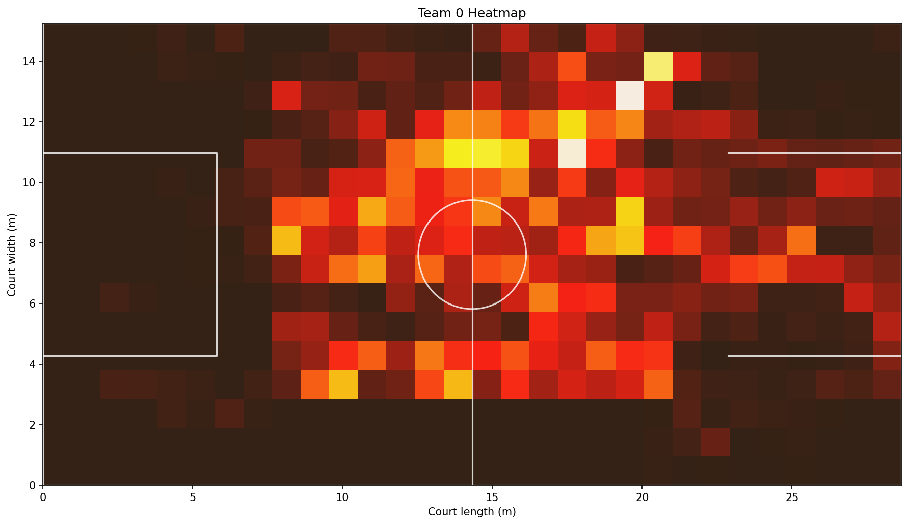
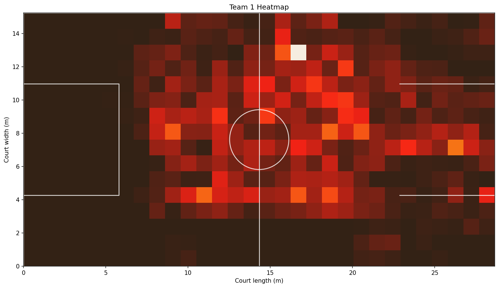

Computer vision lab / in progress
Turning game filminto court intelligence.
This page is intentionally separate from the project deck because the work is still evolving. The prototype already produces player annotations and team heatmaps, and the next step is tightening reliability until the output is useful for coaching workflows.


Pipeline shape
The model is only useful if the output becomes coaching language.
The goal is not just to draw boxes around players. The goal is to turn noisy game film into structured spatial evidence: who occupied which zones, what spacing patterns appeared, and where the system needs more supervision.
Detect
Identify players frame-by-frame and produce annotated output that can be visually inspected for misses, swaps, and tracking drift.
Separate
Split court activity into team-level outputs so the raw video becomes a map of possession shape and court occupation.
Aggregate
Convert detections into heatmaps and spatial summaries that can reveal tendencies without watching every second manually.
Refine
Use the mistakes in the annotated video as hard examples for model improvement, threshold tuning, and future evaluation.
Roadmap
What this becomes next.
The best portfolio move here is honesty: the prototype is already producing meaningful output, and the next version should make the system more stable, explainable, and coach-friendly.
Cleaner tracking
Reduce identity switches, missed detections, and jitter so the video output feels less noisy and the downstream heatmaps become more trustworthy.
Evaluation loop
Build a small validation set and track model performance with repeatable metrics instead of relying only on visual inspection.
Coaching layer
Translate spatial output into useful basketball questions: spacing, defensive shape, transition lanes, possession zones, and player movement tendencies.